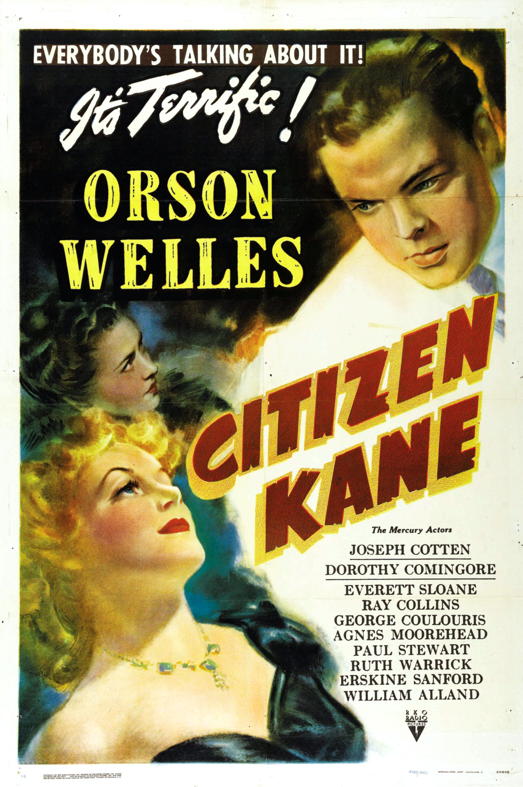

Citizen Kane
14th Academy Awards
(Oscars 1942)
9 Nominations, 1 Award
| Nominations | ||
|---|---|---|
| Category | Nominees | Result |
| Outstanding Motion Picture | Mercury | Nominated |
| Actor | Orson Welles | Nominated |
| Directing | Orson Welles | Nominated |
| Writing (Original Screenplay) | Herman J. Mankiewicz and Orson Welles | Won |
| Cinematography (Black-and-White) | Gregg Toland | Nominated |
| Film Editing | Robert Wise | Nominated |
| Art Direction (Black-and-White) | Al Fields, Darrell Silvera, Perry Ferguson, and Van Nest Polglase | Nominated |
| Sound Recording | John Aalberg | Nominated |
| Music (Music Score of a Dramatic Picture) | Bernard Herrmann | Nominated |